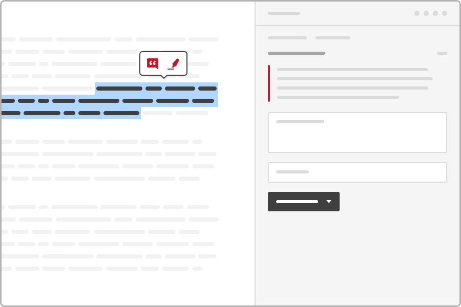
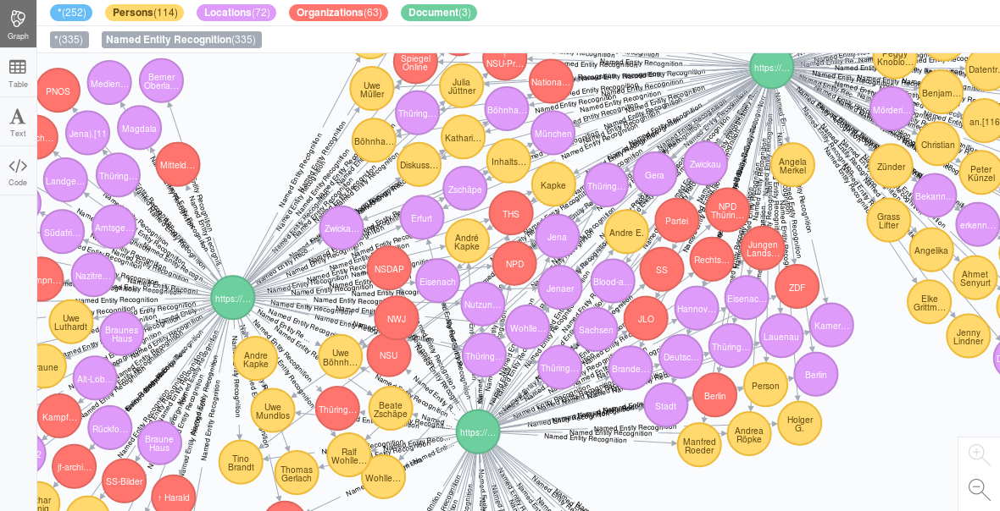

Integration with Open Source annotation tool Hypothesis
The integrated Open Source visual annotation tool Hypothesis provides an powerful visual user interface for (collaborative) web annotation and tagging by human editors, teams and groups that supports not only to tag documents and add page notes, but allows you to annotate documents and web pages within the text, even for single words, names, parts of sentences, sentences or paragraphs.

To improve search, textanalytics & textmining and connect knowledge by annotations of human editors, the open source search engine offers an easy to use web user interface for setup an import and indexing of hypothesis annotations, tags and documents.
Why (collaborative) tagging and (collaborative) annotations by (teams of) human editors?
If a name and no of its aliases or a word and no of its synonyms is not contained in the document content or metadata it can not be found. But that doesn't mean, that the document or web page is not important for this topic.
Even if text mining and text analytics technology like automatic named entity recognition of persons, organizations or places and interactive filters and automatic topic detection by thesaurus for automatic content analysis is very helpful to automate much of the researcher(s) and editor(s) work, no automatic text analysis, OCR, automatic tagging of topics or concepts by thesaurus and no machine learning mode is perfect and computers are dumb or/and often have to few data about all context to judge about ambigous data or meaning of texts.
So additionally to automatic text analysis, good search results needs manual annotations by human editors or together in teams to improve of search results, find important and relevant documents, for easier filtering, verification and classification and together connect different knowledge of (interdisciplinary) teams.
Search finds more by combining / data enrichment of content with tags and annotations
If you tag a document or web page with a tag (f.e. a name of a person, organization, location or a concept or word), this document will be found on further queries with this word(s) even if this word(s) is/are not contained in the document or would be not recognized by automatic text analysis.

Analyze and filter tagged documents by interactive filters for faceted search
Additionally, tags will be used for faceted search and exploratory search like like aggregated overviews and interactive filters for navigation, too, so you get an overview and you can find and filter or drill down tagged documents and websites faster and with more comfort.

Human knowledge better than artificial intelligence, OCR and automatic ranking algorithms
So as specialists, domain experts or thinking human you and your team can add words, interpretations, qualitative values or structure that can not be analysed automatically because there is no data enrichment or automatic analysis plugin for that issue or its automatic analysis is not good enough.
Your research team or users will find yet analysed and tagged documents despite complexity, missing parts or context, codes, euphemism and lies
If a name and no of its aliases or a word and no of its synonyms is not contained in the document, it doesn't mean, that the document is not important for or connected with the topic. For example corrupt companies or politicians won't write the word corruption into their documents, even if the document is a evidence of corruption.
If you tag a document with a tag (f.e. a name of a person, organization, location or a concept or word), this document will be found on further queries with this word(s) even if this word(s) is/are not contained in the document.
Connect knowledge

Maybe you search for a connection of two special topics, for example for racism in an organization.
Your search would find anything.
Maybe a specialist tags a document with the tag racism because he knows, that a special code is for racism.
Maybe another specialist has knowledge about members of the organization and tags the document with the organization.
Now by the semantic knowledge graph you will find the document if you search for that organization in context with the topic, even if the specialists added their knowledge for only one topic or domain without deeper knowledge about the other one.
Automated tagging and automated annotation
Such manually tagging by human editors, teams or groups is for documents that doesn't contain the tag (or another word or query or aliases) within the content, so that a human has to classify it to this additional context(s).
If you want to tag documents i.e. with Tags like organizations, persons, locations or aliases that are in the text for sure without potential technical problems (works only if for sure if without OCR errors, typos or alternate and/or yet unknown labels or codes), you can add this tag or name to the Thesaurus or Named Entities Manager which will tag all documents containing the name, concept or query automatically and for new documents, too.

Import annotations and tags from Hypothesis for search, analytics & textmining
You can setup the import / indexing of annotations, tags and annotated documents from the Hypothesis API by the web user interface for configuration of datasources.
.
Full text search in document content with annotations and text
After setup of a Hypothesis datasource and the first run of the import you can search with full text search the full document content combined/enriched with your notes and tags.
Faceted search and interactive filters by Hypothesis tags
Additionally you get interactive filters for faceted search, text analytics and text mining by your Hypothesis tags.
Automatic named entity recognition / named entity extraction for tagged or annotated documents and web pages
Additionally automatic analysis like Named Entity Recognition / automatic extraction of persons, organizations and places by machine learning will be done automatically for documents and web pages you tagged with Hypothesis.
So once you have annotated a document or web page in hypothesis, that was not in you search index yet, it will be indexed and you get some advantages of the automatic text analytics, even if you know the additional automatic annotations are not perfect and complete and needs further annotations by humans.